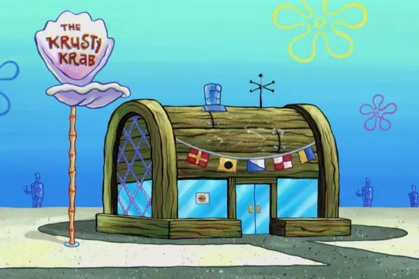

O Siri Cascudo é o restaurante mais conhecido da Fenda do Bikini.O proprietário é o ganancioso Sirigueijo, o cozinheiro é o espontâneo Bob Esponja e o gerente é o rabugento Lula Molusco. OP Siri Cascudo é conhecido principalmente pelo seu hambúrguer de siri saboroso. Sorte do Seu Sirigueijo, porque o seu restaurante vive cheio de clientes, mas em alguns episódio o Siri Cascudo é mostrado com problemas, como em Hambúrguer Decepcionante, na segunda temporada.
Hambúrguer com carne realmente de siri empanado e crocante, queijo prato, folhas de rúcula, tomate seco, picles e a maionese de páprica da casa no pão brioche selado. Acompanha porção de fritas individual.